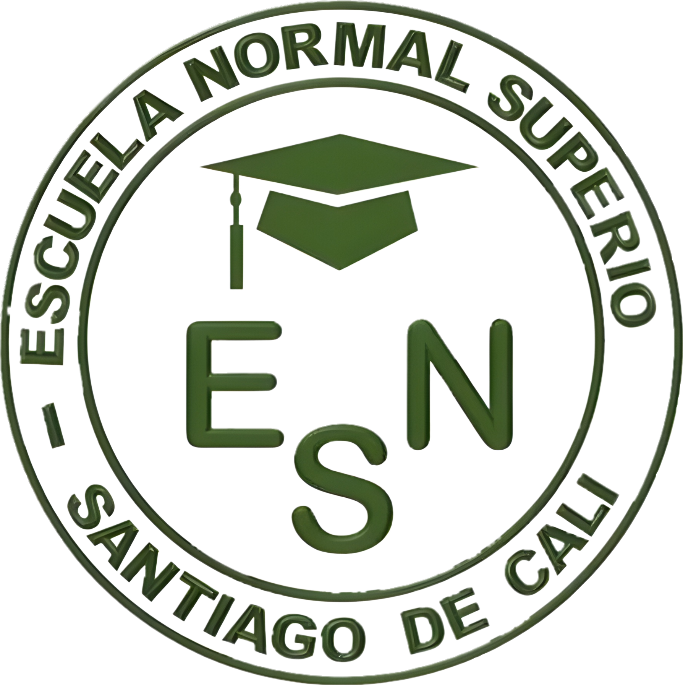

Educación
Innovación Digital
El impacto de las nuevas herramientas en el aula. ¿Cómo la tecnología facilita el aprendizaje colaborativo y la creatividad sin límites?
Explorar Área →
Una exploración profunda sobre cómo la era digital redefine la educación, la seguridad y la conexión humana en el siglo XXI.
En el Grado 7-6, entendemos que la tecnología no es un destino, sino un viaje constante de aprendizaje y descubrimiento.
Bajo la guía de la Institución Educativa Normal Superior Santiago de Cali, desarrollamos habilidades críticas para navegar un mundo donde la inteligencia artificial, el internet de las cosas y la ciberseguridad son pilares fundamentales de nuestra sociedad.
Este portal ha sido diseñado para centralizar los conceptos más relevantes de nuestra formación, permitiendo una visualización clara y moderna de los retos y oportunidades que el futuro nos depara.

Explora los tres pilares fundamentales de nuestro currículo tecnológico.
El impacto de las nuevas herramientas en el aula. ¿Cómo la tecnología facilita el aprendizaje colaborativo y la creatividad sin límites?
Explorar Área →
Navegar seguro es una prioridad. Estrategias fundamentales para proteger nuestra identidad, privacidad y datos en el inmenso mar de internet.
Ver Guía →
Un mundo interconectado. El surgimiento del 5G, el IoT y cómo la comunicación instantánea está borrando las fronteras globales.
Descubrir →